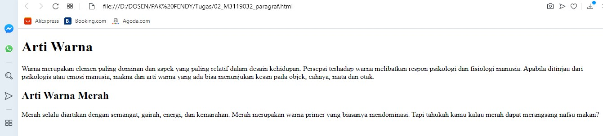

Membuat Paragraf
HTML menyediakan tag khusus untuk membuat paragraf. Penulisannya menggunakan huruf p. Dapat dilihat pada codingan
dibawah ini.
Codingan
<!DOCTYPE html>
<html>
<head>
<title>Membuat Paragraf</title>
</head>
<body>
<h1>Arti Warna</h1>
<p>
Warna merupakan elemen paling dominan dan aspek yang paling relatif dalam desain kehidupan.
Persepsi terhadap warna melibatkan respon psikologi dan fisiologi manusia.
Apabila ditinjau dari psikologis atau emosi manusia, makna dan arti warna yang ada bisa
menunjukan kesan pada objek, cahaya, mata dan otak.
</p>
<h2>Arti Warna Merah</h2>
<p>
Merah selalu diartikan dengan semangat, gairah, energi, dan kemarahan.
Merah merupakan warna primer yang biasanya mendominasi.
Tapi tahukah kamu kalau merah dapat merangsang nafsu makan?
</p>
</body>
</html>
Hasil codingan

Analisis
Gambar diatas menunjukkan isi dokumen yang terdiri dari 2 paragraf yaitu paragraf pertama diawali
dengan arti warna sedangkan paragraf kedua diawali dengan arti warna merah.
Back